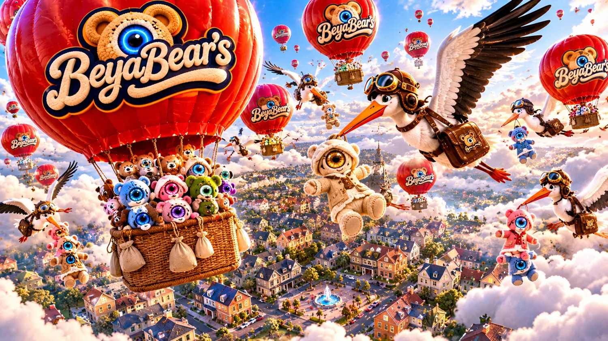
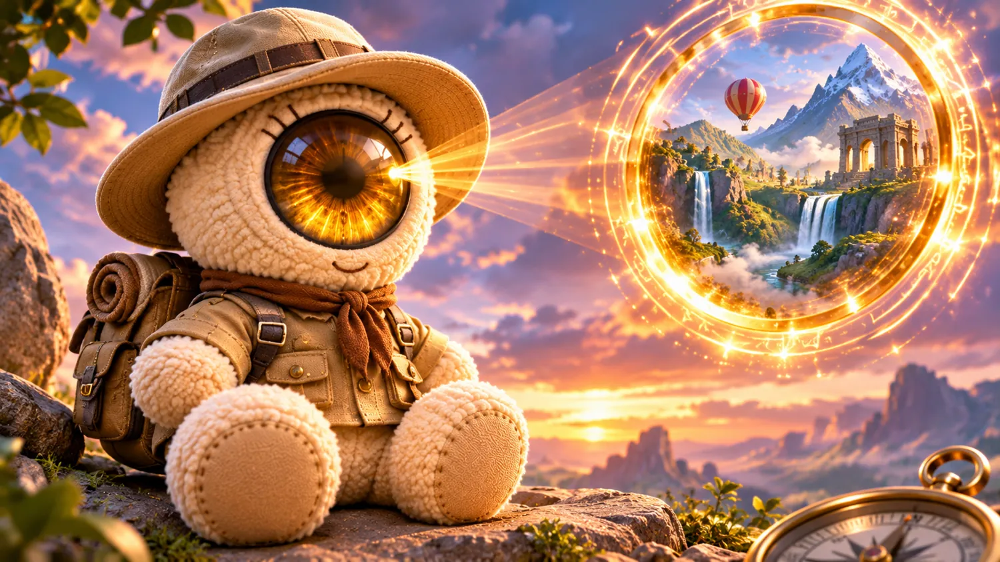
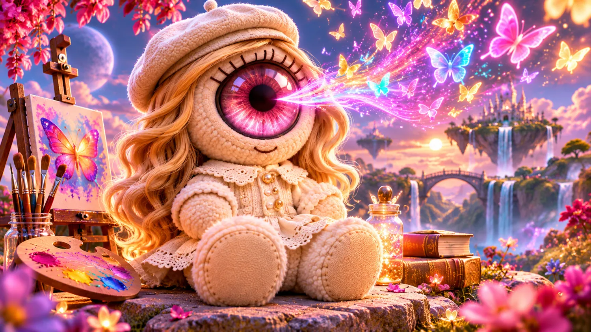
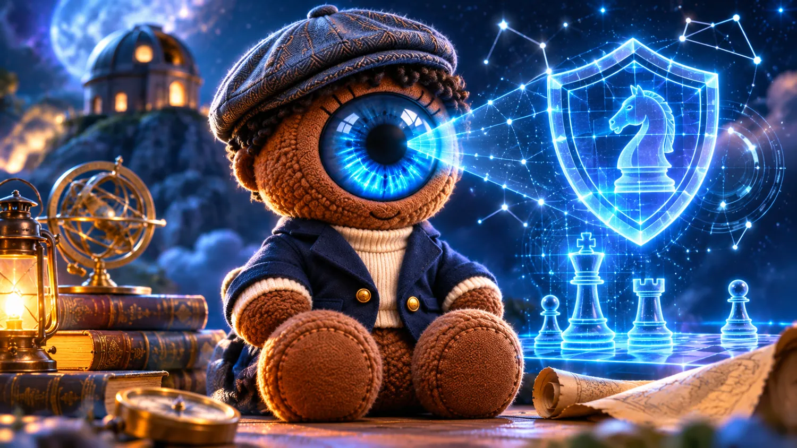
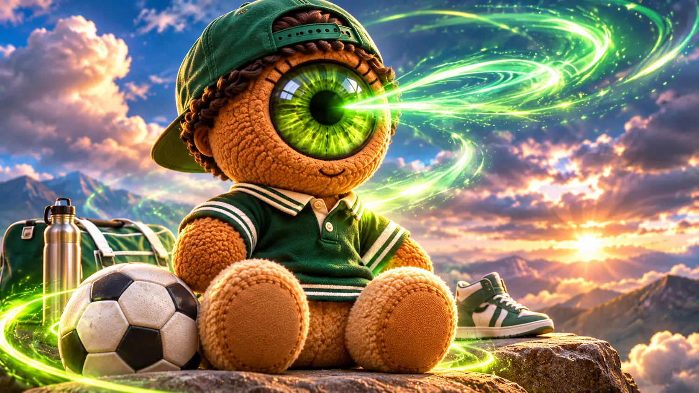
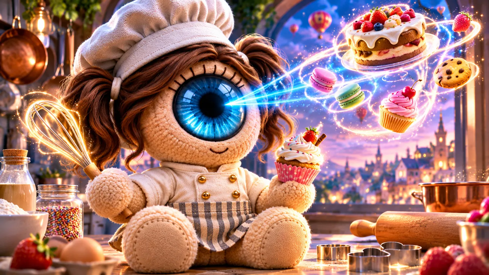
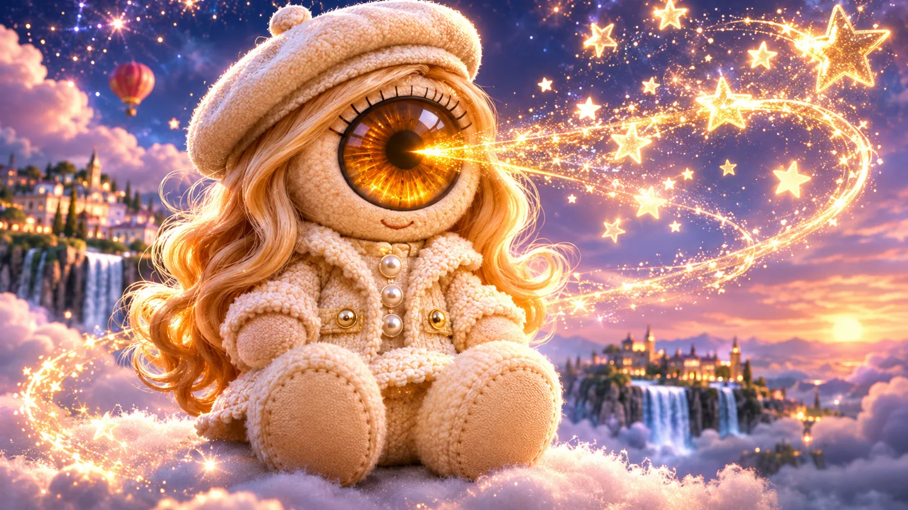
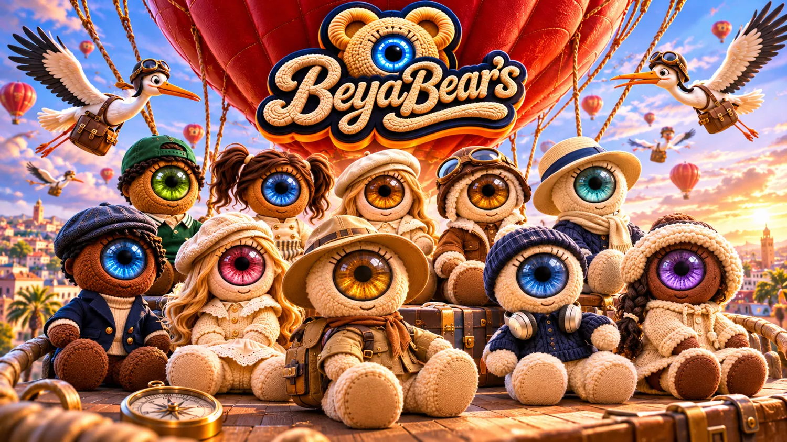
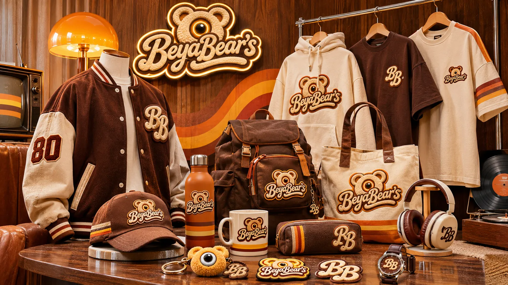
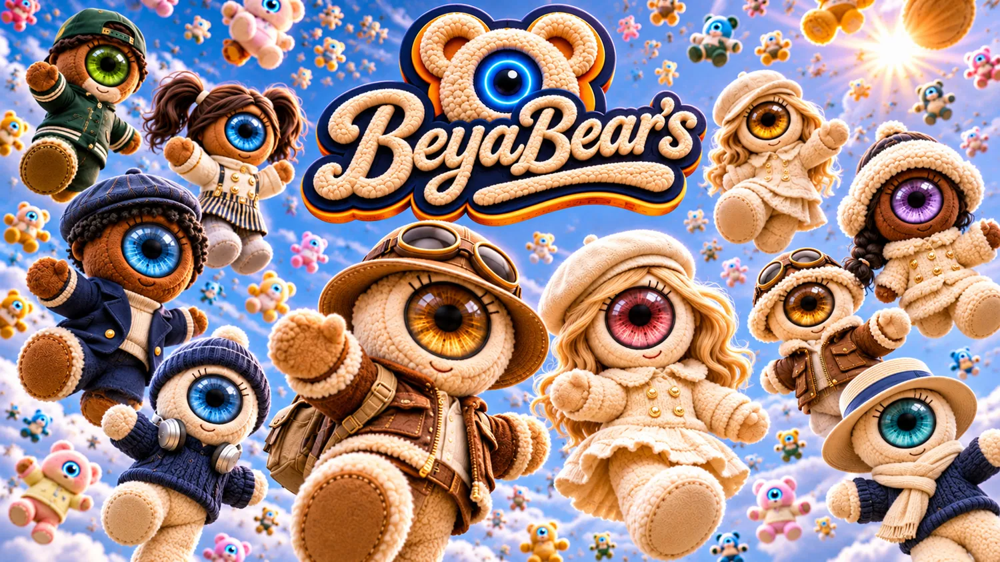

Les parents choisissent les contacts
La peluche n'appelle et ne reçoit que les proches enregistrés par la famille.
BeyaBear's est la peluche dont l'œil est un écran. Elle appelle les proches, raconte des histoires, répond aux questions et veille la nuit.
Un doudou que l'on serre dans ses bras. Un écran rond que l'on regarde dans les yeux.
La peluche ne bouge pas. C'est son œil qui change : un iris vivant au repos, puis l'écran de ce que l'enfant demande.

Dix personnages à collectionner. La couleur de l'iris annonce leur caractère : la créativité, le jeu, la stratégie, la gourmandise, le rêve, l'aventure.







Une montgolfière, des cigognes et des centaines de parachutes rouges : c'est ainsi qu'un BeyaBear's arrive dans les bras d'un enfant.
La même silhouette, six personnalités. La fourrure change, la lumière de l'œil aussi.

Le logo brodé en relief, façon fourrure, passe du doudou au vestiaire. Une ligne streetwear pour les enfants et pour leurs parents.
Rien ne dépasse : l'écran affleure le visage, la caméra tient dans un œillet de dix millimètres, le son sort du dos.
Caractéristiques du prototype en cours d'assemblage. Elles peuvent évoluer avant la série.
La peluche n'appelle et ne reçoit que les proches enregistrés par la famille.
Les réponses sont courtes, simples et adaptées à tous les âges.
Quand l'écran s'éteint, il reste une peluche que l'on emmène partout.

La démonstration fonctionne dès maintenant dans un navigateur : le menu, les appels, les histoires et la voix.